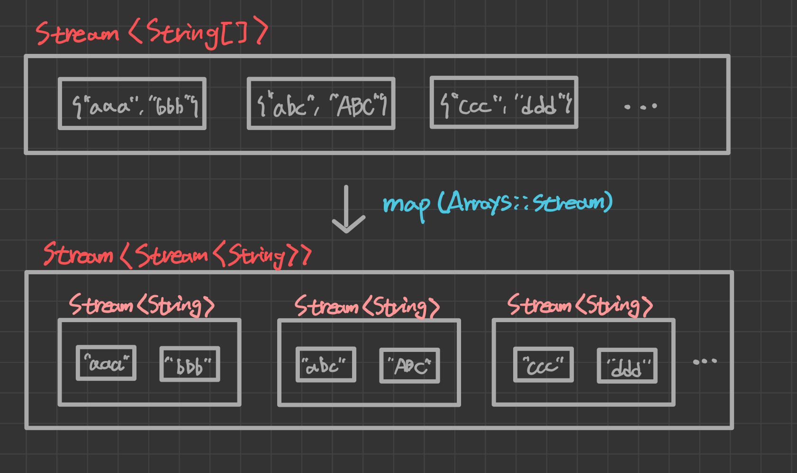

목차
- 스트림이란?
- 스트림 만들기
- 스트림의 중간 연산
- Optional
와 OptionalInt - 스트림의 최종 연산
스트림이란?
지금까지 우리는 많은 수의 데이터를 다룰 때, 컬렉션이나 배열에 데이터를 담은 뒤 원하는 결과를 얻기 위해 for문과 Iterator를 이용해서 코드를 작성했다. 그러나 이런 방식으로 작성된 코드는 너무 길고 알아보기 힘들뿐더러 코드의 재사용성도 떨어진다.
또 다른 문제는 데이터 소스마다 다른 방식으로 다뤄야한다는 것인데, Collection이나 Iterator와 같은 인터페이스를 이용해서 컬렉션을 다루는 방식을 표준화하기는 했지만
각 컬렉션 클래스에는 같은 기능의 메소드들이 중복해서 정의되어 있다. 예를 들어 List를 정렬할 때는 Collections.sort()를 사용해야하고, 배열을 정렬할 때는 Arrays.sort()를 사용해야 한다.
이러한 문제점들을 해결하기 위해서 만든 것이 스트림(stream)이다. 스트림은 데이터 소스를 추상화하고, 데이터를 다루는데 자주 사용되는 메소드들을 정의해 놓았다. 따라서 데이터 소스가 무엇이던 간에 같은 방식으로 다룰 수 있게 되었고 코드의 재사용성이 향상되었다.
스트림을 사용하면, 배열이나 컬렉션뿐만 아니라 파일에 저장된 데이터도 모두 같은 방식으로 다룰 수 있다.
예를 들어, 같은 내용을 저장하는 문자열 배열과 List가 있을 때,
1
2
String[] arr = {"aaa", "ddd", "ccc"};
List<String> list = Arrays.asList(arr);
이 두가지 데이터 소스를 기반으로 하는 스트림의 생성 방법은 아래와 같다.
1
2
Stream<String> stream1 = list.stream();
Stream<String> stream2 = Arrays.stream(arr);
두 가지 스트림으로 데이터 소스의 데이터를 읽어서 정렬하고 화면에 출력하는 방법은 다음과 같다. 데이터 소스가 정렬되는 것은 아니라는 점에 유의하자
1
2
stream1.sorted().forEach(System.out::println);
stream2.sorted().forEach(System.out::println);
이 두 스트림의 데이터 소스는 서로 다르지만, 정렬하고 출력하는 방법은 완전히 동일한 것을 알 수 있다.
스트림은 데이터 소스를 변경하지 않는다.
스트림은 데이터 소스로부터 데이터를 읽기만할 뿐, 데이터 소스를 변경하지 않는다는 차이가 있다. 필요하다면, 변경된 결과를 컬렉션이나 배열에 담아서 반환할 수도 있다.
1
List<String> sortedList = stream1.sorted().collect(Collectors.toList());
스트림은 일회용이다.
스트림은 Iterator처럼 일회용이다. 따라서 컬렉션의 요소를 모두 읽고 나면 다시 사용할 수 없기때문에 필요하다면 스트림을 다시 생성해야 한다.
1
2
3
stream1.sorted().forEach(System.out::println);
long count = stream1.count();
System.out.println(count);
1
2
3
4
Exception in thread "main" java.lang.IllegalStateException: stream has already been operated upon or closed
at java.base/java.util.stream.AbstractPipeline.evaluate(AbstractPipeline.java:229)
at java.base/java.util.stream.ReferencePipeline.count(ReferencePipeline.java:605)
at com.example.javastudy.week15.StreamEx.main(StreamEx.java:17)
스트림은 작업을 내부 반복으로 처리한다.
스트림은 반복문을 메소드의 내부에 숨기는 내부 반복을 사용하기 때문에 간결한 작업이 가능한 것이다. forEach()는 매개변수에 대입된 람다식을 데이터 소스의 모든 요소에 적용한다.
즉, forEach()는 메소드 안으로 for문을 넣은 것이다. 수행할 작업은 매개변수로 받는다.
1
2
3
4
5
6
7
void forEach(Consumer<? super T> action){
Objects.requireNonNull(action); //매개변수 null 체크
for(T t : src){ //내부반복
action.accept(T);
}
}
스트림의 연산
스트림이 제공하는 연산은 중간 연산과 최종 연산으로 분류할 수 있는데, 중간 연산은 연산 결과를 스트림으로 반환하기 때문에 중간 연산을 연속해서 연결할 수 있다. 반면에 최종 연산은 스트림의 요소를 소모하면서 연산을 수행하므로 단 한번만 연산이 가능하다.
| 중간연산 | 설명 |
|---|---|
| Stream<T> distinct() | 중복을 제거 |
| Stream<T> filter(Predicate<T> predicate) | 조건에 안맞는 요소 제외 |
| Stream<T> limit(long maxSize) | 스트림의 일부를 잘라냄 |
| Stream<T> skip(long n) | 스트림의 일부를 건너뜀 |
| Stream<T> peek(Consumer<T> action) | 스트림의 요소에 작업 수행 |
| Stream<T> sorted() Stream<T> sorted(Comparator<T> comparator) | 스트림의 요소를 정렬 |
| Stream<R> map(Function<T,R> mapper) DoubleStream mapToDouble(ToDoubleFunction<T> mapper) IntStream mapToInt(ToIntFunction<T> mapper) LongStream mapToLong(ToLongFunction<T> mapper) Stream<R> flatMap(Function<T, Stream<R>> mapper) DoubleStream flatMapToDouble(Function<T,DoubleStream> m) IntStream flatMapToInt(Function<T,IntStream> m) LongStream flatMapToLong(Function<T,LongStream> m) | 스트림의 요소를 반환 |
| 최종연산 | 설명 |
|---|---|
| void forEach(Consumer<? super T> action) void forEachOrdered(Consumer<? super T> action) | 각 요소에 지정된 작업 수행 |
| long count() | 스트림의 요소의 개수 반환 |
| Optional<T> max(Comparator<? super T> c) Optional<T> min(Comparator<? super T> c) | 스트림의 최대값/최소값 반환 |
| Optional<T> findAny() Optional<T> findFirst() | 스트림의 요소 하나 반환 |
| boolean allMatch(Predicate<T> p) boolean anyMatch(Predicate<T> p) boolean noneMatch(Predicate<T> p) | 주어진 조건을 만족하는지 |
| Object[] toArray() A[] toArray(IntFunction<A[]> generator) | 스트림의 모든 요소를 배열로 반환 |
| Optional<T> reduce(BunaryOperator<T> a) T reduce(T identity, BunaryOperator<T> a) U reduce(I identity, BunaryOperator<U,T,U> a, BunaryOperator<T> combiner) | 스트림의 요소를 하나씩 줄여가면서 계산 |
| R collect(Collector<T,A,R> collector) R collect(Supplier<R> s, BiConsumer<R,T> a, BiConsumer<R,R> c) | 스트림의 요소를 수집 |
앞으로 이 메소드들을 하나씩 설명할텐데, 중간연산은 map()과 flatMap(), 최종연산은 reduce()와 collect()가 핵심이다. 나머지 메소드는 이해하기도 쉽고 사용법도 간단하다.
지연된 연산
스트림 연산에서 중간 연산은 최종 연산이 수행되기 전까지 수행되지 않는다. 스트림에 대해 distinct()나 sort()같은 중간 연산을 호출해도 즉각적인 연산이 수행되지 않고, 최종 연산이 수행되어야 비로소 스트림의 요소들이 중간 연산을 거쳐 최종 연산에서 소모된다.
Stream와 IntStream
요소의 타입이 T인 스트림은 기본적으로 Stream<T>이지만, 오토박싱&언박싱으로 인한 비효율을 줄이기 위해 데이터 소스의 요소를 기본형으로 다루는 스트림인 IntStream, LongStream, DoubleStream이 제공된다.
일반적으로 Stream<Integer> 대신 IntStream을 사용하는 것이 더 효율적이고, int타입의 값으로 작업하는데 유용한 메소드들이 포함되어 있다.
병렬 스트림
스트림으로 데이터를 다룰 때의 장점 중 하나로 병렬 처리가 쉽다는 점도 있는데, 스트림에 parallel()이라는 메소드를 호출해서 병렬로 연산을 수행하도록 지시하면 끝이다.
반대로 병렬로 처리되지 않게 하려면 sequencial()을 호출하면 되는데, 모든 스트림은 기본적으로 병렬 스트림이 아니므로 parallel()을 취소할 때만 사용하면 된다.
1
2
3
int sum = stream1.parallel()
.mapToInt(s -> s.length())
.sum();
병렬처리가 항상 더 빠른 결과를 얻게 해주는 것은 아니라는 점을 명심하자.
스트림 만들기
스트림의 소스가 될 수 있는 대상은 배열, 컬렉션, 임의의 수 등으로 다양하며, 다양한 소스들로부터 스트림을 생성하는 방법을 하나씩 알아보자.
컬렉션
컬렉션의 최고 조상인 Collection에 stream()이 정의되어 있다. 그래서 Collection을 구현한 자식 클래스인 List와 Set을 구현한 클래스들은 모두 이 메소드를 통해 스트림을 생성할 수 있다. stream()은 해당 컬렉션을 소스(source)로 하는 스트림을 반환한다.
1
Stream<T> Collection.stream()
배열
배열을 소스로하는 스트림을 생성하는 메소드는 Stream과 Arrays에 static 메소드로 정의되어 있다.
1
2
3
4
5
Stream<T> Stream.of(T...values)
Stream<T> Stream.of(T[])
Stream<T> Arrays.stream(T[])
Stream<T> Arrays.stream(T[] array, int startInclusive, int endExclusive)
예를 들어 문자열 스트림은 다음과 같이 생성한다.
1
2
3
4
Stream<String> stream1 = Stream.of("a", "b", "c");
Stream<String> stream2 = Stream.of(new String[]{"a", "b", "c"});
Stream<String> stream3 = Arrays.stream(new String[]{"a", "b", "c"});
Stream<String> stream4 = Arrays.stream(new String[]{"a", "b", "c"}, 0, 3);
그리고 int, long, double과 같은 기본형 배열을 소스로 하는 스트림을 생성하는 메소드도 있다.
1
2
3
4
IntStream IntStream.of(int... values)
IntStream IntStream.of(int[])
IntStream Arrays.stream(int[])
IntStream Arrays.stream(int[] array, int startInclusive, int endExclusive)
이 외에도 long과 double타입의 배열로부터 LongStream과 DoubleStream을 생성하는 메소드도 있으나 쉽게 유추할 수 있으므로 생략한다.
특정 범위의 정수
IntStream과 LongStream은 지정된 범위의 연속된 정수를 스트림으로 생성해서 반환하는 range()와 rangeClosed()를 가지고 있다.
1
2
IntStream IntStream.range(int begin, int end)
IntStream IntStream.rangeClosed(int begin, int end)
range()의 경우, 경계의 끝인 end가 포함되지 않고 rangeClosed()의 경우에는 포함된다.
1
2
3
4
5
IntStream stream1 = IntStream.range(1, 5);
IntStream stream2 = IntStream.rangeClosed(1, 5);
stream1.forEach((s)-> System.out.print(s+" "));
System.out.println();
stream2.forEach((s)-> System.out.print(s+" "));
1
2
1 2 3 4
1 2 3 4 5
임의의 수
난수를 생성하는데 사용하는 Random클래스에는 아래와 같은 인스턴스 메소드들이 포함되어 있다. 이 메소드들은 해당 타입의 난수들로 이루어진 스트림을 반환한다.
1
2
3
IntStream ints()
LongStream longs()
DoubleStream doubles()
이 메소드들이 반환하는 스트림은 크기가 정해지지 않은 무한 스트림(infinite stream)이기 때문에 limit()도 같이 사용해서 스트림의 크기를 제한해주어야 한다.
1
2
IntStream intStream = new Random().ints();
intStream.limit(5).forEach(System.out::println);
혹은 매개변수로 스트림의 크기를 전달해서 유한 스트림을 반환받을 수도 있다.
1
2
3
4
5
IntStream ints(long streamSize)
LongStream longs(long streamSize)
DoubleStream doubles(long streamSize)
...
IntStream intStream = new Random().ints(5);
단, 위의 메소드들로 생성된 스트림의 난수는 아래의 범위를 갖는다.
1
2
3
Integer.MIN_VALUE <= ints() <= Integer.MAX_VALUE
Long.MIN_VALUE <= longs() <= Long.MAX_VALUE
0.0 <= doubles() < 1.0
지정된 범위의 난수를 발생시키는 스트림을 얻는 메소드는 아래와 같다. 단, end는 범위에 포함되지 않는다.
1
2
3
4
5
6
7
IntStream ints(int begin, int end)
LongStream longs(long begin, long end)
DoubleStream doubles(double begin, double end)
IntStream ints(long streamSize, int begin, int end)
LongStream longs(long streamSize, long begin, long end)
DoubleStream doubles(long streamSize, double begin, double end)
람다식 - iterate(), generate()
Stream클래스의 iterate()와 generate()는 람다식을 매개변수로 받아서 이 람다식에 의해 계산되는 값들을 요소로 하는 무한 스트림을 생성한다.
1
2
static <T> Stream<T> iterate(T seed, UnaryOperator<T> f)
static <T> Stream<T> generate(Supplier<T> s)
iterate()는 seed값으로 지정된 값부터 시작해서 람다식 f에 의해 계산된 결과를 다시 seed값으로 해서 계산을 반복한다. 아래의 스트림은 0부터 시작해서 값이 2씩 계속 증가하는 무한 스트림이다.
1
Stream<Integer> evenStream = Stream.iterate(0, n -> n+2);
generate()도 람다식에 의해 계산되는 값을 요소로 하는 무한 스트림을 생성해서 반환하지만, iterate()와 달리 이전 결과를 이용해서 다음 요소를 계산하지는 않는다. generate()에 정의된 매개변수의 타입은 Supplier<T>이므로 매개변수가 없는 람다식만 허용된다.
1
2
Stream<Double> stream = Stream.generate(Math::random);
Stream<Integer> generate = Stream.generate(() -> 1);
또한, iterate()와 generate()로 생성된 스트림을 IntStream 같은 기본향 스트림 타입의 참조변수로 다룰 수 없으므로 주의해야 한다.
굳이 필요하다면 mapToInt()와 같은 메소드로 변환해야 한다.
파일
java.nio.file.Files는 파일을 다루는데 필요한 메소드들을 제공하는데, list()는 지정된 디렉토리에 있는 파일의 목록을 소스로 하는 스트림을 생성해서 반환한다.
1
Stream<Path> Files.list(Path dir)
이 외에도 Files클래스에 Path를 요소로 하는 스트림을 생성하는 메소드가 더 있으니 관심있다면 추가로 찾아보길 바란다.
빈 스트림
요소가 하나도 없는 빈 스트림을 생성할 수도 있다 스트림에 연산을 수행한 결과가 하나도 없을 때, null을 반환하는 것보다 빈 스트림을 반환하는 것이 더 나을 수 있다.
1
Stream emptyStream = Stream.empty();
두 스트림의 연결
Stream의 static메소드인 concat()을 사용하면 두 스트림을 하나로 연결할 수 있다. 단, 이 때 두 스트림의 요소는 같은 타입이어야 한다.
스트림의 중간 연산
스트림 자르기 - skip(), limit()
skip(n)은 처음 n개의 요소를 건너뛰고, limit(n)은 스트림의 요소를 n개로 제한한다.
스트림의 요소 걸러내기 - filter(), distinct()
distinct()는 스트림에서 중복된 요소들을 제거하고, filter()는 주어진 조건(Predicate)에 맞지 않는 요소를 걸러낸다.
1
stream1.distinct().forEach(System.out::println);
filter()는 매개변수로 Predicate를 필요로 하는데, 아래와 같이 연산 결과가 boolean인 람다식을 사용해도 된다.
1
2
IntStream intStream = IntStream.rangeClosed(1, 10);
intStream.filter(i -> i%2 == 0).forEach(System.out::println);
정렬 - sorted()
sorted()는 지정된 Comparator로 스트림을 정렬하는데, Comparator대신 int값을 반환하는 람다식을 사용하는 것도 가능하다. Comparator를 지정하지 않으면 스트림 요소의 기본 정렬 기준인 Comparable으로 정렬한다.
이 때 스트림의 요소가 Comparable을 구현한 클래스가 아니면 예외가 발생한다.
1
2
Stream<T> sorted()
Stream<T> sorted(Comparator<T> comparator)
JDK 1.8부터 Comparator인터페이스에 static메소드와 default메소드가 많이 추가되었는데, 이 메소드들을 이용하면 정렬이 쉬워진다. 이 메소드들은 모두 Comparator<T>를 반환하며, 아래의 메소드 목록은 제네릭에서 와일드 카드부분을 제거하여 간략화한 것이므로, 정확한 메소드 선언이 궁금하면 Java API 문서를 참조하자.
Comparator의 default methods
1
2
3
4
5
6
7
8
reversed()
thenComparing(Comparator<? super T> other)
thenComparing(Function<? super T, ? extends U> keyExtractor)
thenComparing(Function<? super T, ? extends U> keyExtractor,
Comparator<? super U> keyComparator)
thenComparingInt(ToIntFunction<? super T> keyExtractor)
thenComparingLong(ToLongFunction<? super T> keyExtractor)
thenComparingDouble(ToDoubleFunction<? super T> keyExtractor)
Comparator의 static methods
1
2
3
4
5
6
7
8
9
10
reverseOrder()
naturalOrder()
comparing(Function<? super T, ? extends U> keyExtractor)
comparing(Function<? super T, ? extends U> keyExtractor,
Comparator<? super U> keyComparator)
comparingInt(ToIntFunction<? super T> keyExtractor)
comparingLong(ToLongFunction<? super T> keyExtractor)
comparingDouble(ToDoubleFunction<? super T> keyExtractor)
nullsFirst(Comparator<? super T> comparator)
nullsLast(Comparator<? super T> comparator)
정렬에 사용되는 메소드의 개수가 많지만, 가장 기본적인 메소드는 comparing()이다. 스트림의 요소가 Comparable을 구현한 경우, 매개변수 하나짜리를 사용하면 되고, 그렇지 않은 경우, 추가적인 매개변수로 정렬기준(Comparator)를 지정해주어야 한다.
만약 비교대상이 기본형인 경우, comparing()대신 comparingInt()등을 사용하면 오토박싱과 언박싱과정이 없어서 더 효율적이다.
그리고 정렬 조건을 추가할 때는 thenComparing()을 사용한다.
예를 들어, 학생 스트림을 반별, 성적순, 이름순으로 정렬하여 출력하려면 다음과 같이 한다.
1
2
3
4
studentStream.sorted(Comparator.comparing(Strudent::getBan)
.thenComparing(Student::getTotalScore)
.thenComparing(Student::getName))
.forEach(System.out::println);
이해를 돕기 위해 학생의 성적을 반별 오름차순, 총점별 내림차순으로 정렬하여 출력하는 예제를 살펴보자.
1
2
3
4
5
6
7
8
9
10
11
12
13
14
15
16
17
18
19
20
21
22
23
24
25
26
27
28
29
30
31
32
33
34
35
36
37
38
39
40
41
public class StreamEx {
public static void main(String[] args) {
Stream<Student> studentStream = Stream.of(
new Student("여자바", 3, 300),
new Student("김자바", 1, 200),
new Student("안자바", 2, 100),
new Student("박자바", 2, 150),
new Student("소자바", 1, 200),
new Student("이자바", 3, 290),
new Student("김자바", 3, 180)
);
studentStream.sorted(Comparator.comparing(Student::getBan)
.thenComparing(Comparator.naturalOrder()))
.forEach(System.out::println);
}
}
@Getter
class Student implements Comparable{
String name;
int ban;
int totalScore;
public Student(String name, int ban, int totalScore) {
this.name = name;
this.ban = ban;
this.totalScore = totalScore;
}
@Override
public String toString() {
return String.format("[%s %d, %d]",name, ban, totalScore);
}
@Override
public int compareTo(Object o) {
return ((Student)o).totalScore - this.totalScore;
}
}
1
2
3
4
5
6
7
[김자바 1, 200]
[소자바 1, 200]
[박자바 2, 150]
[안자바 2, 100]
[여자바 3, 300]
[이자바 3, 290]
[김자바 3, 180]
변환 - map()
스트림의 요소에 저장된 값 중에서 원하는 필드만 뽑아내거나 특정 형태로 변환해야 할 때가 있다. 이 때 사용하는 것이 map()이다.
1
Stream<R> map(Function<? super T,? extends R> mapper)
예를 들어, File 스트림에서 파일명만 뽑아서 출력하고 싶을 때, map()을 이용하면 된다.
1
2
3
4
Stream<File> fileStream = Stream.of(new File("Ex1.java"),new File("Ex1"),
new File("Ex1.bak"),new File("Ex2.java"),new File("Ex2.txt"));
fileStream.map(File::getName).forEach(System.out::println);
map()도 중간연산이므로 하나의 스트림에 여러 번 적용할 수 있다. 다음 예제는 File스트림에서 파일의 확장자만 뽑은 다음 중복을 제거해서 출력한다.
1
2
3
fileStream.map(File::getName).filter(s -> s.indexOf('.') != -1)
.map(s -> s.substring(s.indexOf('.')+1)).map(String::toUpperCase)
.distinct().forEach(System.out::println);
조회 - peek()
연산과 연산 사이에 올바르게 처리되었는지 확인하고 싶다면, peek()를 사용하자. forEach()와 달리, 스트림의 요소를 소모하지 않기때문에 연산 사이에 여러 번 사용해도 문제가 되지 않는다.
1
2
3
4
5
fileStream.map(File::getName).filter(s -> s.indexOf('.') != -1)
.peek(s -> System.out.printf("filename = %s%n",s))
.map(s -> s.substring(s.indexOf('.')+1))
.peek(s -> System.out.printf("extension = %s%n",s))
.distinct().forEach(System.out::println);
이 메소드는 filter()나 map()의 결과를 확인할 때 유용하게 사용할 수 있다.
mapToInt(), mapToLong(), mapToDouble()
map()은 결과로 Stream<T>타입의 스트림을 반환하는데, 스트림의 요소를 숫자로 변환하는 경우, IntStream같은 기본형 스트림이 더 유용할 수 있다. Stream<T>타입의 스트림을 기본형 스트림으로 변환하는 메소드는 아래와 같다.
1
2
3
DoubleStream mapToDouble(ToDoubleFunction<T> mapper)
IntStream mapToInt(ToIntFunction<T> mapper)
LongStream mapToLong(ToLongFunction<T> mapper)
count()만 지원하는 Stream<T>과 달리 기본형 스트림은 아래와 같이 숫자를 다루는데 편리한 메소드들을 제공한다.
1
2
3
4
int sum()
OptionalDouble average()
OptionalInt max()
OptionalInt min()
스트림의 요소가 하나도 없을 때, sum()은 0을 반환하면 되지만, 다른 메소드들은 단순히 0을 반환할 수 없기때문에 Optional로 값을 반환한다. 이 Optional클래스들에 대한 내용은 잠시 후에 자세히 다루겠다.
이 메소드들은 최종연산이므로 호출 후에 스트림이 닫힌다는 점을 주의하자. 하나의 스트림에 대해 sum()과 average()를 연속해서 호출할 수 없다.
만약 연속해서 메소드들을 사용해야 한다면 summaryStatistics()라는 메소드를 사용하면 편리하다.
1
2
3
4
5
6
IntSummaryStatistics stat = scoreStream.summaryStatistics();
long totalCount = stat.getCount();
long totalScore = stat.getSum();
double avgScore = stat.getAverage();
int minScore = stat.getMin();
int maxScore = stat.getMax();
반대로 IntStream을 Stream<T>으로 변환할 때는 mapToObj()를 사용하고, Stream<Integer>으로 변환할 때는 boxed()를 사용한다.
아래는 로또번호를 생성해서 출력하는 코드인데, mapToObj()를 이용해서 IntStream을 Stream<String>으로 변환한다.
1
2
3
4
IntStream intStream = new Random().ints(1,46);
Stream<String> lottoStream = intStream.distinct().limit(6)
.sorted().mapToObj(i -> i+",");
lottoStream.forEach(System.out::print);
flatMap() - Stream<T[]>를 Stream로 변환
스트림의 요소가 배열이거나 map()의 연산결과가 배열인 경우, 즉 스트림의 타입이 Stream<T[]>인 경우, Stream<T>로 다루는 것이 편할 수도 있다. 그럴 때는 map()대신 flatMap()을 사용하면 된다.
예를 들어, 아래와 같이 요소가 문자열 배열(String[])인 스트림이 있을 때,
1
2
3
4
Stream<String[]> strArrStream = Stream.of(
new String[]{"abc","def","ghi"},
new String[]{"ABC","GHI","JKDSA"}
);
각 요소의 문자열들을 합쳐서 문자열이 요소인 Stream<String>으로 만들려면 어떻게 해야할까?
먼저 스트림의 요소를 변환해야 하니 map()을 써야할 것이고, 여기에 배열을 스트림으로 만들어주는 Arrays.stream(T[])를 같이 사용해보자.
1
Stream<Stream<String>> streamStream = strArrStream.map(Arrays::stream);
의도와 달리 스트림이 Stream<String>이 아닌 Stream<Stream<String>>으로 변환되었다. 이 상황을 그림으로 그려보면 다음과 같다.

각 요소의 문자열들이 합쳐지지 않고, 스트림의 스트림 형태로 되어버렸다. 이 때, 간단히 map()을 flatMap()으로 바꾸기만 하면 우리가 원하는 결과를 얻을 수 있다.
flatMap()은 map()과 달리 스트림의 스트림이 아닌 스트림으로 만들어준다.
1
Stream<String> stringStream = strArrStream.flatMap(Arrays::stream);
아래는 여러 문장을 요소로 하는 스트림에서 문장들을 split()으로 나눠서 요소가 단어인 스트림을 만드는 예제이다. 여기서 flatMap()이 아닌 map()을 사용했다면, Stream<String>이 아닌 Stream<Stream<String>>이 반환되었을 것이다.
1
2
3
4
5
6
7
String[] lineArr = {
"Believe or not It is true",
"Do or do not There is no try"
};
Stream<String> stream = Arrays.stream(lineArr);
Stream<String> stringStream = stream.flatMap(line -> Stream.of(line.split(" ")));
stringStream.forEach(System.out::println);
Optional<T>와 OptionalInt
앞서 잠시 언급했다시피, 최종 연산의 결과 타입이 Optional인 경우가 있다. Optional<T>은 제네릭 클래스로 T타입의 객체를 감싸는 래퍼 클래스다. 따라서 Optional타입의 객체에는 모든 타입의 참조변수를 담을 수 있다.
1
2
3
4
public final class Optional<T> {
private final T value;
...
}
최종연산의 결과를 그냥 반환하는 것이 아니라 Optional객체에 담아서 반환하면, 반환된 결과가 null인지 아닌지 매번 if문으로 체크하는 대신 Optional에 정의된 메소드를 통해서 간단히 처리할 수 있다.
이를 통해 null 체크를 위한 if문 없이도 NullPointException이 발생하지 않는, 보다 안전하고 간결한 코드를 작성할 수 있다.
Optional객체 생성하기
Optional객체를 생성할 때는 of() 또는 ofNullable()을 사용한다.
만일 참조변수의 값이 null일 가능성이 있으면, of()대신 ofNullable()을 사용해야 한다. of()는 매개변수의 값이 null이면 NullPointException이 발생하기 때문이다.
1
2
Optional<String> optional1 = Optional.of(null); //NullPointException
Optional<String> optional2 = Optional.ofNullable(null); //ok
Optional<T>타입의 참조변수를 기본값으로 초기화할 때는 empty()를 사용한다.
1
2
Optional<String> optVal = null; //null로 초기화
Optional<String> optVal = Optional.<String>empty(); //빈 객체로 초기화
empty()는 제네릭 메소드기때문에 앞에 <T>를 붙였다. 추정가능하므로 생략해도 된다.
Optional객체의 값 가져오기
Optional객체에 저장된 값을 가져올 때는 get()을 사용한다. 값이 null일 때는 NoSuchElementException이 발생하며, 이를 대비해서 orElse()로 대체할 값을 지정할 수 있다.
1
2
3
Optional<String> optional = Optional.of("abc");
String str1 = optional.get();
String str2 = optional.orElse(" ");
orElse()의 변형으로는 null을 대체할 값을 변환하는 람다식을 지정하는 orElseGet()과 null일 때 지정된 예외를 발생시키는 orElseThrow()가 있다.
1
2
T ofElseGet(Supplier<? extends T> other)
T orElseThrow(Sipplier<? extends T> exceptionSupplier)
Stream처럼 Optional객체에도 filter(), map(), flatMap()을 사용할 수 있다.
1
2
3
int result = Optional.of("123")
.filter(x -> x.length() > 0)
.map(Integer::parseInt).orElse(-1);
isPresent()는 Optional객체의 값이 null이면 false를, 아니면 true를 반환한다. ifPresent(Consumer<T> block)은 값이 있으면 주어진 람다식을 실행하고, 없으면 아무 일도 하지 않는다.
1
2
3
if(str != null){
System.out.println(str);
}
만일 위와 같은 조건문이 있다면, isPresent()를 이용해서 다음과 같이 쓸 수 있다.
1
2
3
if(Optional.ofNullable(str).isPresent()){
System.out.println(str);
}
이 코드를 ifPresent()를 사용하면 더 간단히 할 수 있다. 아래의 문장은 참조변수 str이 null이 아닐 때만 값을 출력하고, null이면 아무 일도 일어나지 않는다.
1
Optional.ofNullable(str).ifPresent(System.out::println);
ifPresent()는 Optional<T>를 반환하는 findAny()나 findFirst()와 같은 최종 연산과 잘 어울린다. Stream에 정의된 메소드 중에서 Optional<T>를 반환하는 것들은 다음과 같다.
1
2
3
4
5
Optional<T> findAny()
Optional<T> findFirst()
Optional<T> max(Comparator<? super T> comparator)
Optional<T> min(Comparator<? super T> comparator)
Optional<T> reduce(BinaryOperator<T> accumulator)
스트림의 최종 연산
최종연산은 스트림의 모든 요소를 소모해서 결과를 만들어내기 때문에 연산 후에 스트림은 닫히게 되어 더 이상 사용할 수 없다. 최종 연산의 결과는 스트림 요소의 합과 같은 단일 값이거나, 스트림의 요소가 담긴 배열 또는 컬렉션일 수 있다.
forEach()
forEach()는 peek()와 달리 스트림의 요소를 소모하는 최종연산이다. 반환 타입이 void 이므로 스트림의 요소를 출력하는 용도로 많이 사용된다.
1
void forEach(Consumer<? super T> action)
조건 검사 - allMatch(), anyMatch(), noneMatch(), findFirst(), findAny()
스트림의 요소에 대해 지정된 조건에 모든 요소가 일치하는지, 일부가 일치하는지, 어떤 요소도 일치하지 않는지를 확인하는데 사용할 수 있는 메소드들이다. 이 메소드들은 모두 매개변수로 Predicate를 요구하며, 연산결과로 boolean을 반환한다.
예를 들어, 학생들의 성적 정보 스트림에서 총점이 100점 이하인 학생이 있는지 확인하는 방법은 다음과 같다.
1
boolean noFailed = studentStream.anyMatch(s -> s.getTotalScore <= 100)
이 외에도 스트림의 요소 중에서 조건에 일치하는 첫 번째 것을 반환하는 findFirst()가 있는데, 주로 filter()와 함께 조건에 맞는 스트림의 요소를 찾는데 사용한다.
findAny()와 findFirst()의 반환타입은 Optional<T>이며, 스트림의 요소가 없을 때는 비어있는 Optional객체를 반환한다.
비어있는 Optional객체는 내부적으로 null을 저장하고 있다.
통계 - count(), sum(), average(), max(), min()
앞서 살펴본 것처럼, 기본형 스트림의 요소들에 대한 통계 정보를 얻을 수 있는 메소드들이 있다. 그러나 기본형 스트림이 아닌 경우에는 통계 관련 메소드들이 아래의 3개뿐이다.
1
2
3
long count()
Optional<T> max(Comparator<? super T> c)
Optional<T> min(Comparator<? super T> c)
대부분의 경우, 이 메소드를 사용하기 보다는 기본형 스트림으로 변환하거나, reduce() 또는 collect()를 사용해서 통계 정보를 얻는다.
리듀싱 - reduce()
reduce()는 스트림의 요소를 줄여나가면서 연산을 수행하고 최종 결과를 반환한다. 그래서 매개변수의 타입이 BinayOperator<T>인 것이다.
처음 두 요소를 가지고 연산한 결과를 가지고 그 다음 요소와 연산한다. 이 과정에서 스트림의 요소를 하나씩 소모하다가 모든 요소를 소모하게 되면 그 결과를 반환한다.
1
Optional<T> reduce(BinaryOperator<T> accumulator)
이 외에도 연산결과의 초기값(identity)을 갖는 reduce()도 있는데, 이 메소드들은 초기값과 스트림의 첫 번째 요소로 연산을 시작한다. 스트림의 요소가 하나도 없는 경우, 초기값이 반환값이 되므로 반환타입이 Optional<T>가 아니라 T이다.
1
2
3
T reduce(T identity, BinaryOperator<T> accumulator)
U reduce(I identity, BinaryOperator<U,T,U> accumulator,
BinaryOperator<T> combiner)
두 번째 메소드의 마지막 매개변수인 combiner는 병렬 스트림에 의해 처리된 결과를 합칠 때 사용하기 위한 것이다.
또한, 앞서 설명한 count()와 sum() 등은 내부적으로 reduce()를 이용해서 구현되었다.
1
2
3
4
int count = intStream.reduce(0, (a,b)->a+1);
int sum = intStream.reduce(0, (a,b)->a+b);
int max = intStream.reduce(Integer.MIN_VALUE, (a,b) -> a>b?a:b);
int min = intStream.reduce(Integer.MAX_VALUE, (a,b) -> a<b?a:b);
collect()
collect()는 스트림의 요소를 수집하는 최종 연산을 앞서 배운 리듀싱과 유사하다. collect()가 스트림의 요소를 수집하려면 collector가 필요하다.
컬렉터는 Collector 인터페이스를 구현한 것으로, 직접 구현하거나 미리 작성된 것을 사용하면 된다. Collectors 클래스는 미리 작성된 다양한 종류의 컬렉터를 반환하는 static method를 가지고 있다.
static 메소드를 간결하게 사용하기 위해서 Collectors 클래스를 static import하는 것이 좋다.
1
2
3
R collect(Collector<T,A,R> collector)
R collect(Supplier<R> supplier, BiConsumer<R,T> accumulator,
BiConsumer<R,R> collector)
스트림을 컬렉션과 배열로 변환 - toList(), toSet(), toMap(), toCollection(), toArray()
스트림의 모든 요소를 컬렉션에 수집하려면 Collections클래스의 toList()와 같은 메소드를 사용하면 된다. List나 Set이 아닌 특정 컬렉션을 지정하려면, toCollection()에 해당 컬렉션의 생성자 참조를 매개변수로 넣어주면 된다.
1
2
3
4
5
List<String> names = studentStream.map(Student::getName)
.collect(Collectors.toList());
ArrayList<String> list = names.stream()
.collect(Collectors.toCollection(ArrayList::new));
Map은 키와 값의 쌍으로 저장해야하므로 객체의 어떤 필드를 키로 사용할지와 값으로 사용할지를 지정해줘야 한다.
1
2
Map<String, Person> map = personStream
.collect(Collectors.toMap(p -> p.getRegId(), p->p));
위의 문장은 Map의 키를Person의 regId로 하고, 값으로 Person객체를 사용한다.
스트림에 저장된 요소들을 T[]타입의 배열로 변환하려면, toArray()를 사용하면 된다. 매개변수로 해당 타입의 생성자 참조를 지정해주면 되는데, 아무것도 지정하지 않을 경우 배열의 타입은 Object[]이다.
1
2
Student[] stuArr = studentStream.toArray(Student[]::new);
Object[] objArr = studentStream.toArray();
통계 - counting(), summinInt(), averagingInt(), maxBy(), minBy()
앞서 살펴본 최종 연산들이 제공하는 통계 정보를 collect()로 똑같이 얻을 수 있다. collect()를 사용하지 않고도 얻을 수 있는데 굳이 collect()를 사용하는 이유는 이후에 groupingBy()와 함께 사용하면 알 수 있을 것이다.
리듀싱 - reducing()
리듀싱 역시 collect()로 가능하다. 단, IntStream에는 매개변수 3개짜리 collect()만 정의되어있기 때문에 boxed()를 통해 IntStream을 Stream<Integer>로 변환해야 매개변수 하나짜리 collect()를 사용할 수 있다.
1
2
3
4
5
6
IntStream intStream = new Random().ints(1, 46).distinct().limit(6);
OptionalInt max1 = intStream.reduce(Integer::max);
Optional<Integer> max2 = intStream.boxed().collect(reducing(Integer::max));
long sum = intStream.reduce(0, (a, b) -> a + b);
long sum2 = intStream.boxed().collect(reducing(0, (a, b) -> a + b));
문자열 결합 - joining()
문자열 스트림의 모든 요소를 하나의 문자열로 연결해서 반환한다. 구분자를 지정해줄 수도 있고, 접두사와 접미사를 지정할 수 있다.
스트림의 요소가 String이나 StringBuffer처럼 CharSequence의 자손인 경우에만 결합이 가능하므로, 스트림의 요소가 문자열이 아닌 경우 map()을 이용해서 스트림의 요소를 문자열로 변환해야 한다.
1
2
3
4
5
6
7
8
9
10
Stream<String> stream = Stream.of("aaa", "bbb", "ccc", "ddd");
String collect = stream.collect(Collectors.joining());
stream = Stream.of("aaa", "bbb", "ccc", "ddd");
String collect1 = stream.collect(Collectors.joining(","));
stream = Stream.of("aaa", "bbb", "ccc", "ddd");
String collect2 = stream.collect(Collectors.joining(",", "[", "]"));
System.out.println(collect);
System.out.println(collect1);
System.out.println(collect2);
1
2
3
aaabbbcccddd
aaa,bbb,ccc,ddd
[aaa,bbb,ccc,ddd]
그룹화와 분할 - groupingBy(), partitioningBy()
그룹화는 스트림의 요소를 특정 기준으로 그룹화하는 것을 의미하고, 분할은 스트림의 요소를 두 가지, 지정된 조건에 일치하는 그룹과 일치하지 않는 그룹으로의 분할을 의미한다.
아래의 메소드 정의에서 알 수 있듯이, groupingBy()는 스트림의 요소를 Function으로, partitioningBy()는 Predicate로 분류한다.
1
2
3
4
5
6
Collector groupingBy(Function classifier)
Collector groupingBy(Function classifier, Collector downstream)
Collector groupingBy(Function classifier,Supplier mapFactory,Collector downstream)
Collector partitioningBy(Predicate predicate)
Collector partitioningBy(Predicate predicate, Collector downstream)
메소드의 정의를 보면 groupingBy()와 partitioningBy()가 분류를 Function으로 하느냐 Predicate로 하느냐의 차이만 있을 뿐 동일하다는 것을 알 수 있다.
스트림을 두 개의 그룹으로 나눠야 한다면, 당연히 partitioningBy()로 분할하는 것이 더 빠르다. 그 외에는 groupingBy()를 쓰면 된다. 그리고 그룹화와 분할화의 결과는 Map에 담겨 반환된다.
메소드 정의만 보면 무슨 소린지 잘 이해되지 않을텐데, 이 메소드를 사용하는 예제를 살펴보자. 예제가 좀 길지만, 천천히 읽어보면 사용법을 알 수 있을 것이다.
참고로, Collectors는 static import 했기때문에 partitioningBy()나 counting() 등 Collectors의 static 메소드를 바로 사용할 수 있는 것이므로 유의하자.
1
2
3
4
5
6
7
8
9
10
11
12
13
14
15
16
17
18
19
20
21
22
23
24
25
26
27
28
29
30
31
32
33
34
35
36
37
38
39
40
41
42
43
44
45
46
47
48
49
50
51
52
53
54
55
56
57
58
59
60
61
62
63
64
65
66
67
68
69
70
71
72
73
74
75
76
77
78
79
80
81
82
83
84
@Getter
@AllArgsConstructor
class Student{
String name;
boolean isMale;
int hak;
int ban;
int score;
@Override
public String toString() {
return String.format("[%s %s %d학년 %d반, %3d점]",
name, isMale ? "남" : "여", hak, ban, score);
}
enum Level{HIGH, MID, LOW}
}
public class PartitioningEx {
public static void main(String[] args) {
Student[] studentArr = {
new Student("나자바",true,1,1,300),
new Student("김지미",false,1,1,250),
new Student("김자바",true,1,1,200),
new Student("이지미",false,1,2,150),
new Student("남자바",true,1,2,100),
new Student("안지미",false,1,2,50),
new Student("황지미",false,1,3,100),
new Student("강지미",false,1,3,150),
new Student("이자바",true,1,3,200),
new Student("나자바",true,2,1,300),
new Student("김지미",false,2,1,250),
new Student("김자바",true,2,1,200),
new Student("이지미",false,2,2,150),
new Student("남자바",true,2,2,100),
new Student("안지미",false,2,2,50),
new Student("황지미",false,2,3,100),
new Student("강지미",false,2,3,150),
new Student("이자바",true,2,3,200)
};
System.out.println("1. 단순분할 (성별로 분할)");
Map<Boolean, List<Student>> studentBySex = Stream.of(studentArr)
.collect(partitioningBy(Student::isMale));
List<Student> maleStudent = studentBySex.get(true);
List<Student> femaleStudent = studentBySex.get(false);
maleStudent.forEach(System.out::println);
femaleStudent.forEach(System.out::println);
System.out.println("2. 단순분할 + 통계 (성별 학생수)");
Map<Boolean, Long> studentNumBySex = Stream.of(studentArr)
.collect(partitioningBy(Student::isMale, counting()));
System.out.println("남학생 수 " + studentNumBySex.get(true));
System.out.println("여학생 수 " + studentNumBySex.get(false));
System.out.println("3. 단순분할 + 통계 (성별 1등)");
Map<Boolean, Optional<Student>> topScoreBySex = Stream.of(studentArr)
.collect(partitioningBy(Student::isMale,
maxBy(comparingInt(Student::getScore))));
System.out.println("남학생 1등 : "+topScoreBySex.get(true));
System.out.println("여학생 1등 : "+topScoreBySex.get(false));
Map<Boolean, Student> topScoreBySex2 = Stream.of(studentArr)
.collect(partitioningBy(Student::isMale,
collectingAndThen(maxBy(
comparingInt(Student::getScore)), Optional::get)));
System.out.println("남학생 1등 : "+topScoreBySex2.get(true));
System.out.println("여학생 1등 : "+topScoreBySex2.get(false));
System.out.println("4. 다중분할(성별 불합격자, 100점 이하");
Map<Boolean, Map<Boolean, List<Student>>> failedStudentBySex =
Stream.of(studentArr)
.collect(partitioningBy(Student::isMale,
partitioningBy(s -> s.getScore() <= 100)));
List<Student> failedMaleStudent = failedStudentBySex.get(true).get(true);
List<Student> failedFemaleStudent = failedStudentBySex.get(false).get(true);
failedMaleStudent.forEach(System.out::println);
failedFemaleStudent.forEach(System.out::println);
}
}
1
2
3
4
5
6
7
8
9
10
11
12
13
14
15
16
17
18
19
20
21
22
23
24
25
26
27
28
29
30
31
32
33
34
35
36
37
1. 단순분할 (성별로 분할)
[나자바 남 1학년 1반, 300점]
[김자바 남 1학년 1반, 200점]
[남자바 남 1학년 2반, 100점]
[이자바 남 1학년 3반, 200점]
[나자바 남 2학년 1반, 300점]
[김자바 남 2학년 1반, 200점]
[남자바 남 2학년 2반, 100점]
[이자바 남 2학년 3반, 200점]
[김지미 여 1학년 1반, 250점]
[이지미 여 1학년 2반, 150점]
[안지미 여 1학년 2반, 50점]
[황지미 여 1학년 3반, 100점]
[강지미 여 1학년 3반, 150점]
[김지미 여 2학년 1반, 250점]
[이지미 여 2학년 2반, 150점]
[안지미 여 2학년 2반, 50점]
[황지미 여 2학년 3반, 100점]
[강지미 여 2학년 3반, 150점]
2. 단순분할 + 통계 (성별 학생수)
남학생 수 8
여학생 수 10
3. 단순분할 + 통계 (성별 1등)
남학생 1등 : Optional[[나자바 남 1학년 1반, 300점]]
여학생 1등 : Optional[[김지미 여 1학년 1반, 250점]]
남학생 1등 : [나자바 남 1학년 1반, 300점]
여학생 1등 : [김지미 여 1학년 1반, 250점]
4. 다중분할(성별 불합격자, 100점 이하
[남자바 남 1학년 2반, 100점]
[남자바 남 2학년 2반, 100점]
[안지미 여 1학년 2반, 50점]
[황지미 여 1학년 3반, 100점]
[안지미 여 2학년 2반, 50점]
[황지미 여 2학년 3반, 100점]
3번 결과를 보면 maxBy()는 반환타입이 Optional<Student>라서 Optional[...]로 출력되는 것을 볼 수 있는데, Optional<Student>가 아닌 Student로 반환 받으려면, collectingAndThen()과 Optional::get을 함께 사용하면 된다.
groupingBy()에 의한 분류
앞선 예제를 활용해서 그룹화에 대해서도 알아보자. 먼저 studentArr을 반 별로 그룹지어 Map에 저장하는 방법은 다음과 같다.
1
2
3
Map<Integer, List<Student>> studentByBan = Stream.of(studentArr)
.collect(groupingBy(Student::getBan));
studentByBan.get(1).forEach(System.out::println); //1반 학생들만 출력
groupingBy()로 그룹화를 하면 기본적으로 Map의 value를 List<T>에 담는다. 그래서 위의 문장은 toList()가 생략된 것과 같다.
1
2
Map<Integer, List<Student>> studentByBan = Stream.of(studentArr)
.collect(groupingBy(Student::getBan, toList()));
만약 toList() 대신 toSet()이나 toCollection(HashSet::new) 등을 사용할 수도 있다.
1
2
Map<Integer, HashSet<Student>> studentByHak = Stream.of(studentArr)
.collect(groupingBy(Student::getHak, toCollection(HashSet::new)));
이번에는 조금 더 복잡하게 studentArr의 성적을 등급으로 나누어 그룹화해보자. 아래 문장은 모든 학생을 세 등급으로 분류하여 집계한다.
1
2
3
4
5
6
7
8
Map<Student.Level, Long> studentByLevel = Stream.of(studentArr)
.collect(groupingBy(s -> {
if (s.getScore() >= 200) return Student.Level.HIGH;
else if (s.getScore() >= 100) return Student.Level.MID;
else return Student.Level.LOW;
}, counting()));
System.out.println(studentByLevel.get(Student.Level.HIGH));
groupingBy()를 여러 번 사용하면, 다수준 그룹화가 가능하다. 만일 학년별로 그룹화한 후에 다시 반별로 그룹화하고 싶으면 다음과 같이 한다.
1
2
3
4
5
Map<Integer, Map<Integer, List<Student>>> studentByHakAndBan =
Stream.of(studentArr).collect(groupingBy(Student::getHak,
groupingBy(Student::getBan)));
studentByHakAndBan.get(2).get(1).forEach(System.out::println);
1
2
3
[나자바 남 2학년 1반, 300점]
[김지미 여 2학년 1반, 250점]
[김자바 남 2학년 1반, 200점]
이 코드를 발전시켜 각 반의 1등을 출력하고 싶다면, collectingAndThen()과 maxBy()를 써서 다음과 같이 하면 된다.
1
2
3
4
Map<Integer, Map<Integer, Student>> topStudents = Stream.of(studentArr)
.collect(groupingBy(Student::getHak, groupingBy(Student::getBan,
collectingAndThen(maxBy(comparingInt(Student::getScore)), Optional::get))));
System.out.println(topStudents.get(1).get(1).getScore());